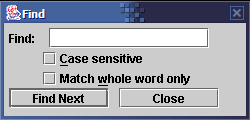

Find

The Find dialog, accessed within the Text Viewer,
allows you to search for text in a text document. The following options are
available:
- Case sensitive: Only matches text whose case exactly matches
the case of the search term.
For example, if the search term is "Foo", it will match the text
Foo, but not FOO or FoO.
- Match whole word only: This will only match whole words
(the search term surrounded by whitespace).
For example, if the search term is "is", it will match the word
is, but not isolationism.